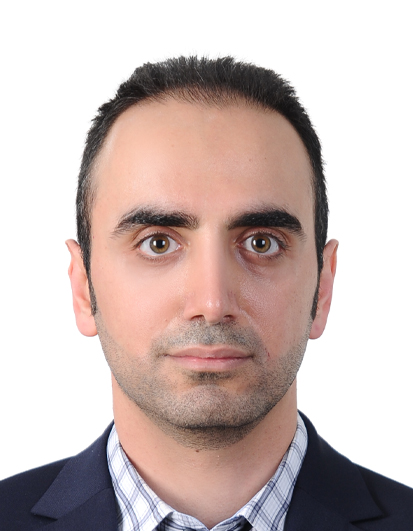

M.Eng in Electrical & Computer Engineering | 8+ Years of Professional Experience
IT Infrastructure and Software professional with a Master’s degree in Electrical and Computer Engineering from the University of Ottawa and a Bachelor’s degree in Computer Engineering (Software) from Islamic Azad University. Over 8 years of experience in IT infrastructure, networking, technical support, and full-stack software development across telecom, engineering, and enterprise environments. Skilled in troubleshooting, Windows Server administration, network support, and system optimization, while continuously expanding expertise in Docker, Kubernetes, and automation technologies.

IT Specialist with a strong background in network support, infrastructure troubleshooting, and technical support across telecom, engineering, and enterprise environments. Holds a Master of Engineering in Electrical and Computer Engineering from the University of Ottawa. Experienced in diagnosing and resolving hardware, software, and network issues to maintain system stability and operational efficiency. Currently expanding expertise in virtualization, Docker, Kubernetes, and automation technologies.
Experienced with LAN/WAN environments, routing & switching, wireless networking, TCP/IP, VPNs, and network troubleshooting. Skilled in maintaining stable and secure infrastructure.
Hands-on experience with Windows Server, Active Directory, virtualization, workstation support, HP server configuration, RAID setup, and infrastructure maintenance.
Experience supporting and developing web applications using ASP.NET, C#, MS SQL Server, Python, HTML, and CSS. Strong background in troubleshooting software and database issues.
Company: Sabanet ISP, Tehran, Iran
Role: Software Support & Full-Stack Developer
Duration: 2018 – 2019
Company: Sazehpad Engineering Firm, Tehran, Iran
Role: IT Specialist
Duration: 2015 – 2023
Company: Sarafraz, Tehran, Iran
Role: IT Specialist (Server Infrastructure)
Duration: 2015 – 2016
Company: Iranian Reinsurance Company, Tehran, Iran
Role: Help Desk Support Technician
Duration: 2014 – 2015
Currently seeking opportunities in IT support, network administration, and infrastructure operations.
(613) 327-2501
Ottawa, Ontario, Canada